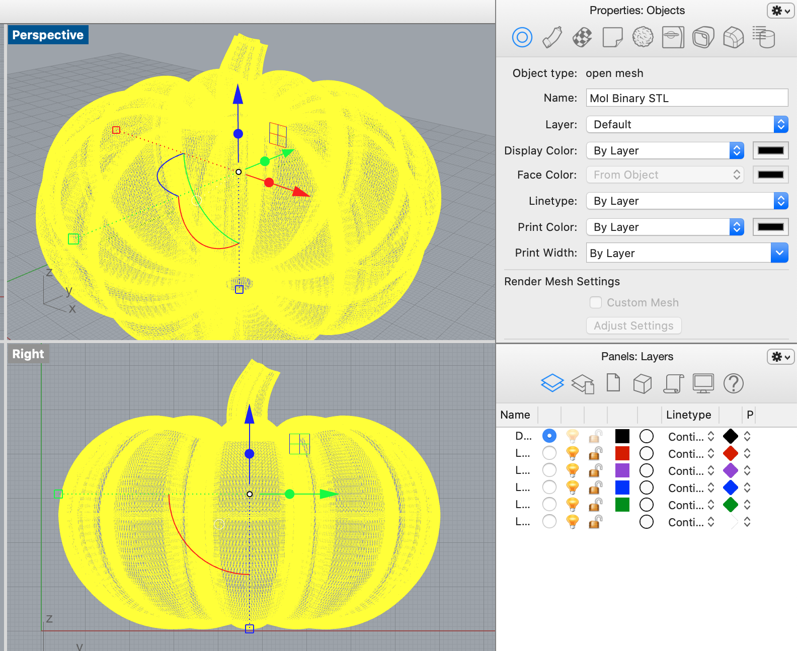
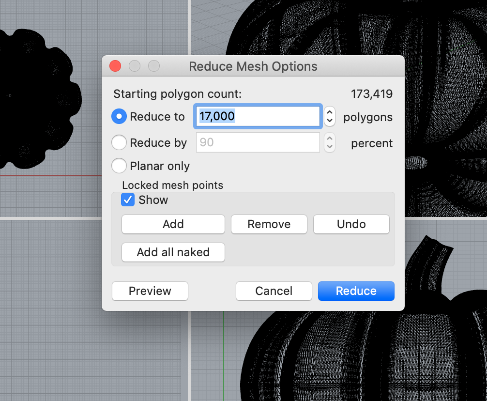
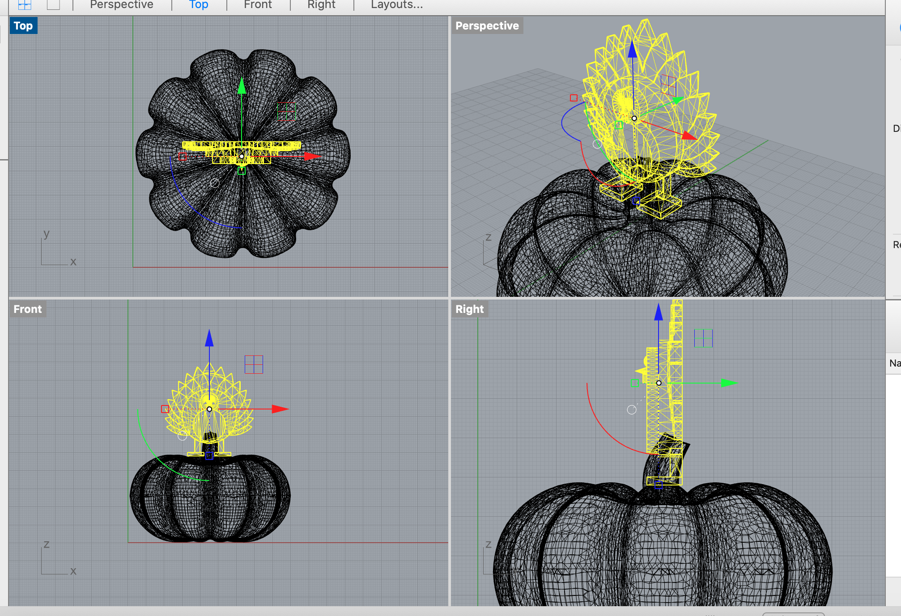
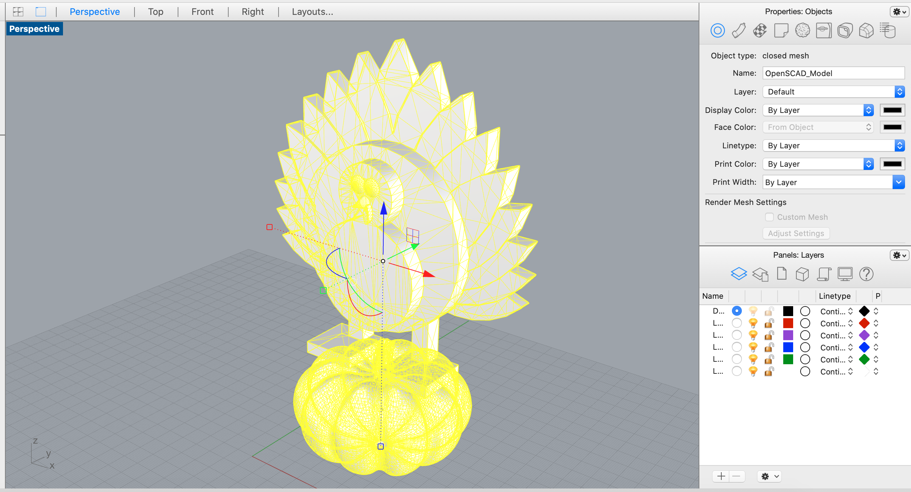
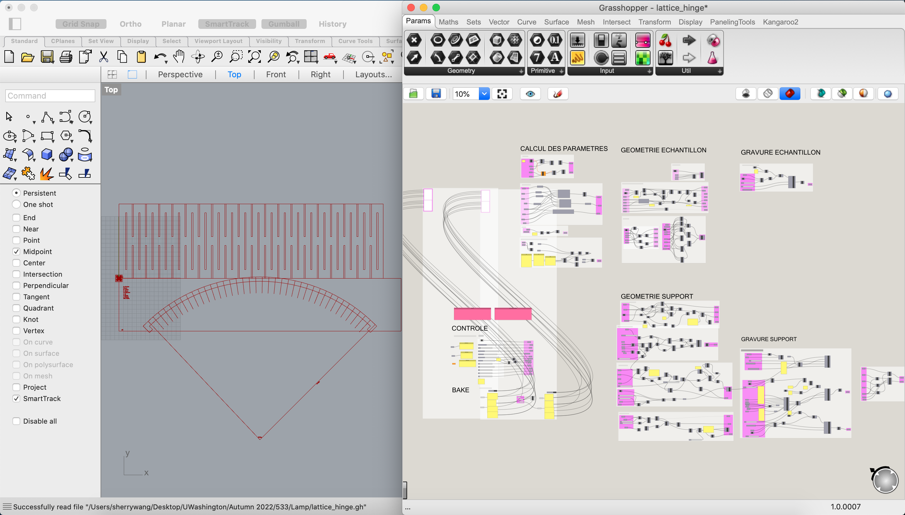
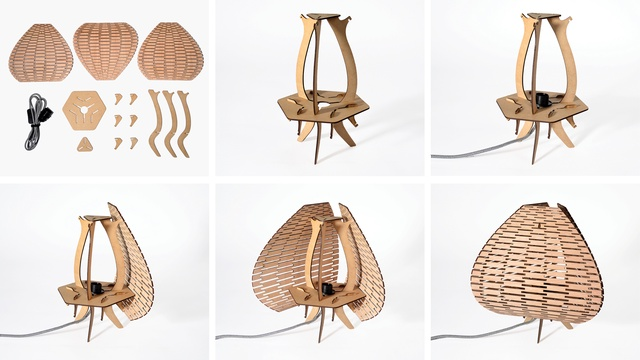
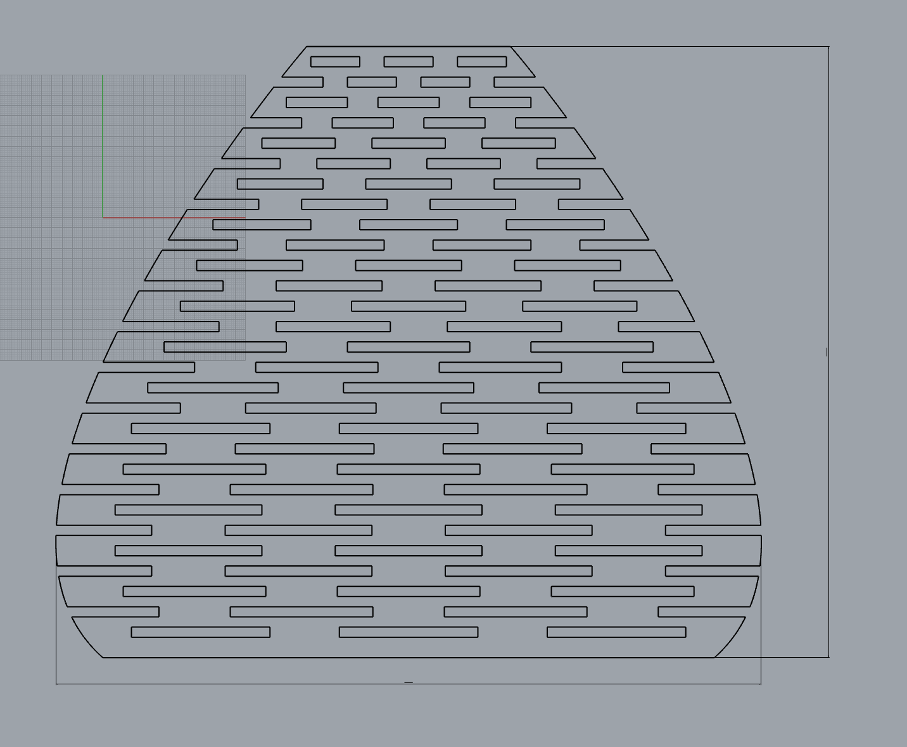
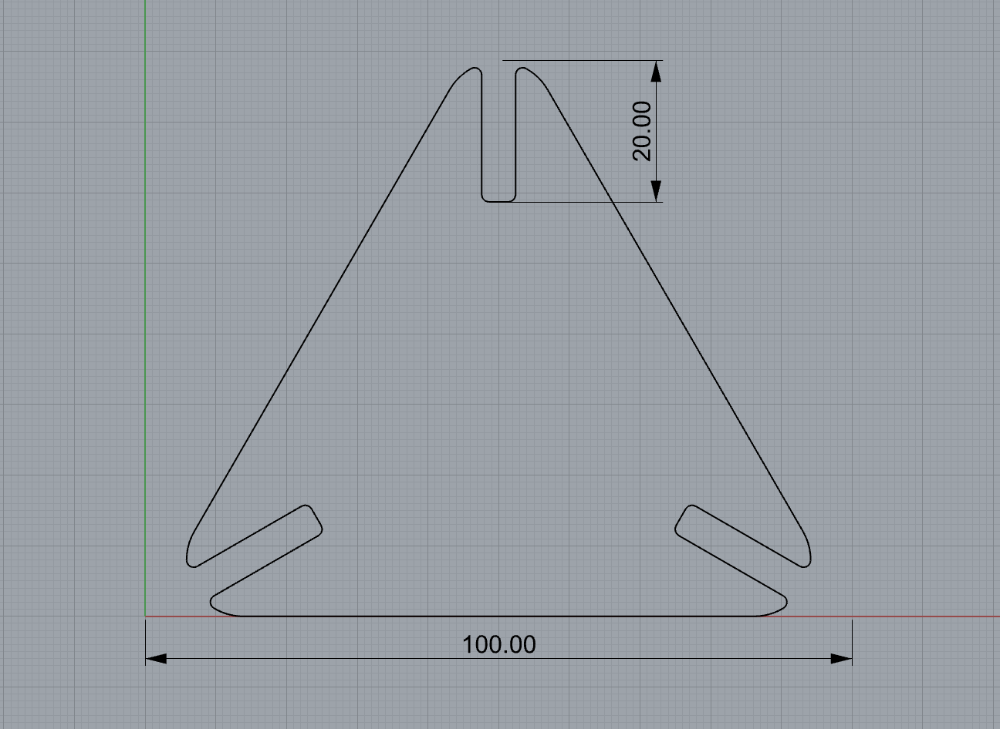

By Sherry Wang
This assignment includes two parts, the first being that we should find two STL files online, repair them and join them to produce a single printable STL. Since Thanksgiving is approaching (and I haven't decided what my lamp would look like yet), I decided to put together something that's autumn-y.
I went on Thingiverse and found two STL files, a munchkin and a silly turkey. I'm including these files under Source files at the bottom of this page. For reference, here are the original links:
Munchkin and other pumpkins
Silly little turkey
I downloaded these files and imported the munchkin first into Rhino.

As you see, this was an open mesh. So following the footsteps of Nadya, I decided to reduce the mesh a little bit to see if it could be closed. The original polygon count was 173,419, and I first entered 170,000, not wanting the munchkin to be distorted.

I got lucky, since after that reduction, the mesh was closed!
Next, I imported the turkey in. Again I was lucky - the original file was already a closed mesh!
As I had both meshes closed, all that was left was to join them together. But before that, my turkey was too small compared to the munchkin, so I decided to scale it up.

I made it 3 times larger using the "Scale" command and moved the turkey to be standing on top of the munchkin, and voila! I was done. I joined them, confirmed that the final piece was still a closed mesh, and exported it into a new STL file.

My meshing process went very smoothly, and I think it was mainly because I was using relatively easy files (unlike baby Yoda, of course) and the creators of the files were very nice people!
Now for the lamp, I started jumping through rabbit holes online. From Best Table Lamps , I discovered a type called "origami lamps", which people use rice paper to create. As I dug deeper into handmade lamps, I went on Etsy and saw more wooden lights like this and that. I was fascinated by the wavy structure, and recalled that lattice hinge could help achieve that when laser cutting.
Then I started learning all about lattice hinge. At first, I got an existing open source file of the pattern.

It was in French, so I had to learn a new language to read the Grasshopper definition. I did that and successfully baked the pattern, but realized the pattern had constraints that could only work for rectangles. For my situation, as I was aiming for a table lamp that can stand stably, I wanted a traingular shape. As a result, although this was a comprehensive and complicated definition, I couldn't use it.
Lucky for me, the website where I got the lattice hinge pattern from was also selling wooden lamps. Here's an image of a triangular lamp that they were selling. I did not purchase the product, so the image was as vague as possible.

I decided to follow this image and tried designing the side shades first. I had several attempts when creating the lattice hinges by myself, due to the traingle side having curvy edges and me hoping the hinges to match those curves. I wanted to use Grasshopper to create a definition, but when creating the curvy edges, I did it manually for a natural feeling, so functions were not of use. In the end, I wrote down all the dimensions of the hinges in a notebook and here's the result:

For the dimension of the lamp, the reference website had it at 30x30x30 cm, so I did the same.
The next piece I created was the top of the lamp, which was a triangle. Since it would be attached to the top of the side shades, the dimensions should match. So I went for an equilateral triangle with 10cm edges. I filleted the corners to be round, also for a natural vibe. For pieces to be held together, gaps were created. I referred to the website once again and put the gaps at the corners, each taking 4.8mm width and 20mm length. The width was the same as the thickness of woodboards I would be using. I filleted the sharp corners using a radius of 1, so that when assembling, it would be easier.

And that's all I did for the first part of the lamp! I found and modified a design I like, finished the most difficult part, a.k.a. the lattice hinges, and started working on other parts!
downloaded munchkin stl file
downloaded silly little turkey stl file
finalized Happy (Early) Thanksgiving! 3dm file
finalized Happy (Early) Thanksgiving! stl file
@tone001 and @davebob3 from Thingiverse for the original stl files!
Junchao and Nadya for answering and others for asking great questions on Discord!